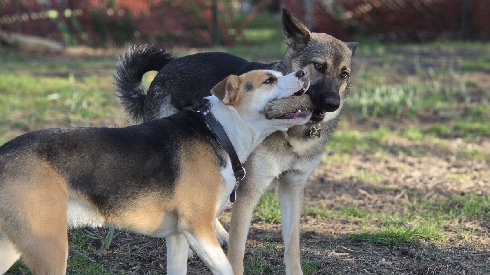
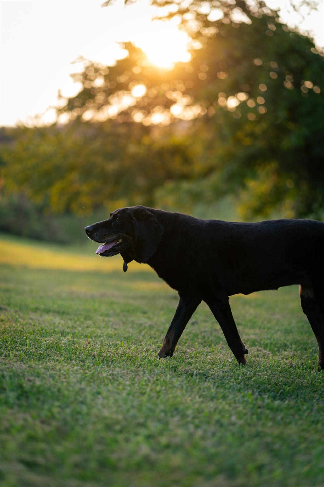
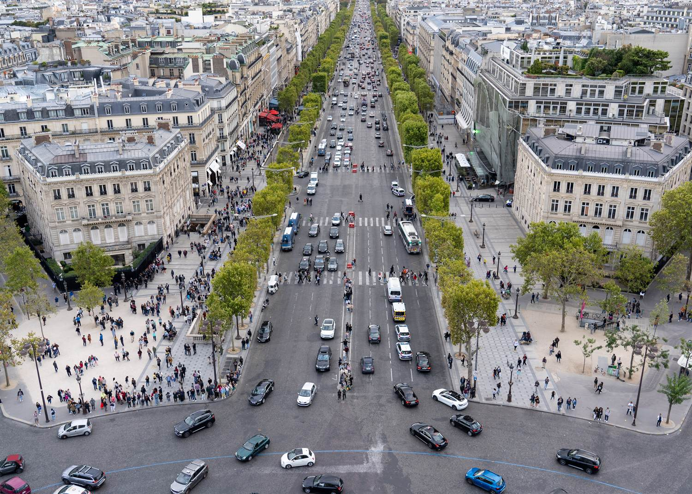
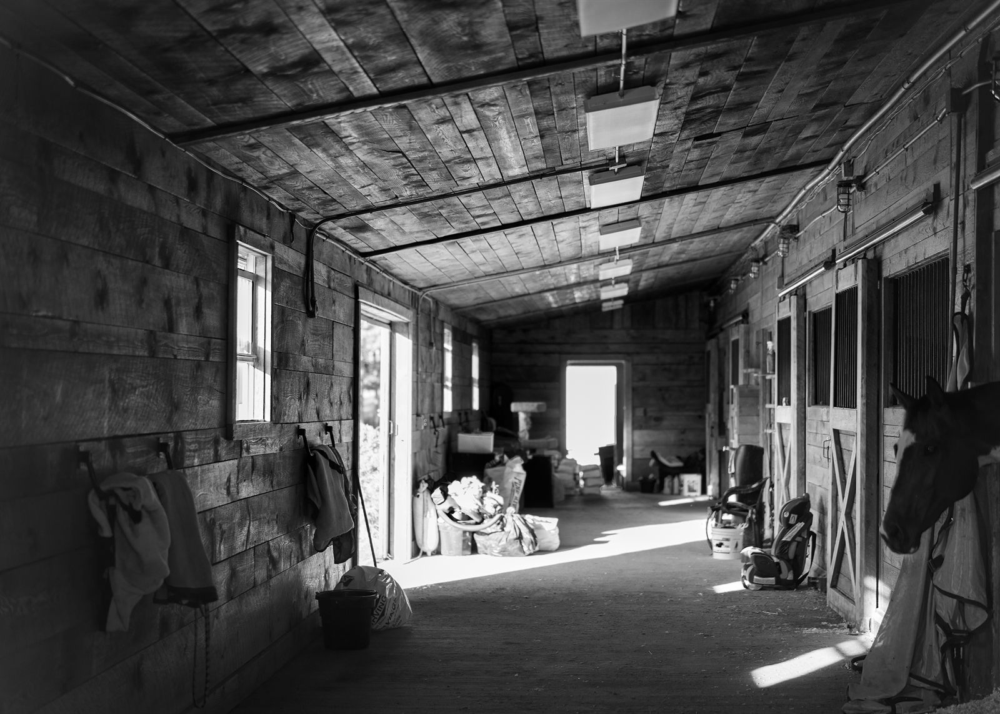

Institutions & Consequences
Exploring duty, loyalty, institutional decay, strategic failure, cultural identity, and the gap between official narratives and lived experience.
The through-line
I am based in Ashland, Kentucky. Away from work and longer-running creative projects, I am usually playing volleyball, hiking, or corralling our two dogs and two cats.
Outside of work, I am usually drawn to projects that combine creativity, structure, and systems thinking. Whether I am writing science fiction, organizing research, testing personal technology tools, or building this website, I tend to approach things the same way: figure out how it actually works, find where it breaks down, and make something cleaner out of it.
This page is less a list of hobbies than a glimpse into how I think. I like projects with internal logic, and I like the process of getting there — finding the seams, testing the edges, making it hold.

I got into photography mostly by accident — brought a camera on a trip and ended up genuinely hooked. Travel is still the best excuse to keep at it. It has also made me more deliberate about how I frame and present things generally, which turns out to be useful well beyond the hobby.



A long-form military science fiction project built around grounded constraints.
Heliofall is a military science fiction epic built around grounded technology, institutional pressure, political scale, and character-driven conflict. The story begins with people operating inside military and organizational systems, then widens toward larger consequences over time.
Command structures, logistics, communications, intelligence failures, political incentives, and technological limits all matter. I am interested in worlds where decisions have costs, institutions have weight, and characters must navigate systems larger than themselves.
Exploring duty, loyalty, institutional decay, strategic failure, cultural identity, and the gap between official narratives and lived experience.
Maintaining factions, timelines, terminology, military structures, political relationships, technology rules, and character arcs as the setting grows.
Keeping the fictional universe coherent without documenting for its own sake. The notes should support the writing, not become the writing.
Science fiction with weight behind it, plus systems thinking and technology's effect on society.
I am drawn to stories shaped by war, politics, logistics, technology, and the long-term consequences of change. Formative and current touchstones include The Falcon Banner, Honor Harrington, The Lost Fleet, Frontlines, Black Fleet Saga, Dread Empire's Fall, Vatta's War, The Forever War, Old Man's War, and Expeditionary Force.
I also return to Iain M. Banks, Kim Stanley Robinson, Ursula K. Le Guin, Ted Chiang, Isaac Asimov, and Becky Chambers for questions of scale, ethics, progress, and social structure.
Books such as Thinking in Systems and The Fifth Discipline connect to my interest in incentives, feedback loops, information flow, and hidden constraints.
Spaceships are cool. The deeper draw is fiction that takes its world seriously: how power works, how systems fail, and how people adapt when technology changes the rules.
Small systems and experiments that keep me close to the tools themselves.
I wanted a portfolio I fully controlled, so I built a static HTML and CSS site, deployed it through GitHub and Cloudflare Pages, and used it to document selected L&D, knowledge management, and training-systems work.
Hands-on with agentic coding and AI writing tools, Claude Code and Codex among them, as a practical support layer for coding, documentation, and knowledge work. The aim is to speed up drafts and comparisons without letting human review or source quality slip.
Keeping notes and reference systems for writing, research, technology experiments, and long-term planning. The goal is useful information that stays findable without constant maintenance.
Exploring layout, spacing, typography, responsive behavior, and the small interaction details that make a digital experience feel intentional rather than merely functional.
I also like practical projects: improving a workflow, organizing a space, testing a tool, or finding a more reliable way to handle a recurring problem. It is not glamorous, but I enjoy figuring out what is actually broken and making it less so.
The same instincts applied to learning design, knowledge management, technology, and organizational capability.